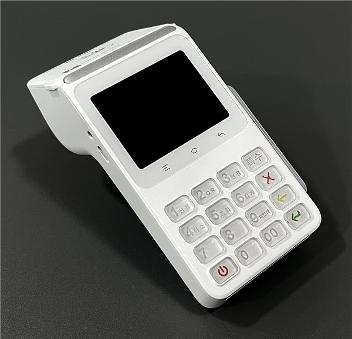
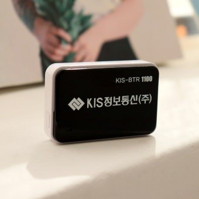

신용카드단말기 신청 필요서류 총정리 — 개인·법인·업종별 준비물

개업 준비로 정신없는 사장님들이 가장 많이 물어보시는 것 중 하나가 "카드단말기 신청하려면 뭘 준비해야 하나요?"입니다. 결론부터 말씀드리면 개인사업자는 딱 세 가지—사업자등록증 사본, 대표자 신분증 사본, 통장 사본—이면 시작됩니다. 다만 업종과 사업자 형태에 따라 한두 장이 더 붙고, 그걸 모르고 접수했다가 심사가 며칠씩 밀리는 경우가 종종 있습니다. 이 글은 신용카드단말기 신청 필요서류를 개인·법인·업종별로 한 번에 정리한 것입니다.
1. 개인사업자 기본 서류 3가지
① 사업자등록증 사본 — 카드 가맹점 계약의 기준이 되는 서류입니다. 상호·주소·업태·종목이 현재 매장과 일치해야 합니다. 자리를 옮겼거나 업종을 바꿨다면 정정 발급부터 받으세요. 홈택스에서 즉시 재출력됩니다.
② 대표자 신분증 사본 — 주민등록증·운전면허증 모두 가능합니다. 유효기간이 지난 면허증은 반려되니 확인하세요.
③ 통장 사본 — 카드 매출 대금이 들어오는 정산 계좌입니다. 사업자등록증 명의와 일치하는 계좌를 권장하며, 계좌번호와 예금주가 선명하게 보여야 합니다. 인터넷뱅킹 통장사본 출력본도 됩니다.
사진으로 찍어 보내주셔도 되고, 스캔본도 됩니다. 흐릿하거나 잘린 사진이 반려 사유 1위라는 점만 기억해 주세요.
2. 법인사업자는 여기에 3가지가 더 붙습니다
법인은 대표자 개인이 아니라 법인 자체가 계약 당사자라 서류가 늘어납니다.
• 법인등기부등본(등기사항전부증명서) — 인터넷등기소에서 발급, 보통 발급 3개월 이내 것을 요구합니다.
• 법인인감증명서 + 사용인감계 — 계약서에 법인인감을 찍는 경우 인감증명서가, 사용인감을 쓰는 경우 사용인감계가 필요합니다.
• 법인 명의 통장 사본 — 법인은 반드시 법인 계좌여야 합니다. 대표자 개인 계좌로는 정산되지 않습니다.
• 여기에 사업자등록증 사본과 대표자 신분증 사본은 개인사업자와 동일하게 필요합니다.
등기부등본·인감증명서는 발급에 시간이 걸리니, 법인은 개인사업자보다 하루이틀 여유를 두고 준비하시는 게 좋습니다.

3. 업종별로 추가되는 서류
인허가가 필요한 업종은 해당 신고증·허가증이 함께 들어갑니다. 대부분 개업할 때 이미 받아 두신 서류라 새로 뗄 일은 거의 없습니다.
• 음식점·카페·고깃집·분식·주점 — 영업신고증(일반음식점·휴게음식점). 단란주점·유흥주점은 영업허가증.
• 미용실·네일·피부관리·이용원 — 미용업 영업신고증.
• 학원·교습소 — 학원설립·운영등록증 또는 교습소 신고증.
• 병원·의원·한의원·약국 — 의료기관 개설신고증(허가증), 약국은 약국개설등록증.
• 편의점·마트·정육점·반찬가게 — 식품판매업(자유업은 불필요, 축산물은 축산물판매업 신고증).
• 세탁소·수리업·공방 — 대부분 자유업이라 사업자등록증만으로 진행됩니다.
• 온라인 판매 병행 — 통신판매업 신고증(오프라인 단말기와는 별개지만, 함께 결제 구성을 잡을 때 참고합니다).
• 펜션·숙박·캠핑장 — 숙박업 신고증 또는 야영장업 등록증.
• 프랜차이즈 가맹점 — 본사가 지정 단말기·밴사를 두는 경우가 있어, 가맹계약서상 조건을 먼저 확인하는 편이 안전합니다.
4. 이런 경우도 신청됩니다
"우리는 안 될 것 같은데"라고 미리 포기하시는 경우가 많은데, 대부분 가능합니다.
• 간이과세자 — 문제없이 가맹됩니다. 매출 규모가 작을수록 오히려 우대 수수료 구간에 들어가는 경우가 많습니다.
• 신규 창업·매출 실적 0 — 무실적 가맹으로 진행됩니다. 개업 전에 미리 신청해 두면 오픈 날부터 카드를 받을 수 있습니다.
• 공동대표·동업 — 사업자등록증상 대표자 전원의 신분증이 필요할 수 있습니다.
• 무점포·출장·배달 전문 — 사업장 주소가 자택이어도 가능하며, 이 경우 무선·이동식 단말기가 적합합니다.
• 1인샵·공유미용실 입점 — 본인 명의 사업자등록증이 있으면 별도 가맹이 됩니다.
• 사업자등록증이 아직 없는 경우 — 이것만은 예외입니다. 카드 가맹은 사업자 단위라 등록증이 먼저입니다. 홈택스에서 온라인 신청하면 보통 1~3영업일에 나오니, 신청과 동시에 단말기 상담을 시작하면 일정이 겹쳐 시간을 아낄 수 있습니다.

5. 접수부터 설치까지 — 실제 일정
① 서류 접수(당일) — 사진·스캔으로 보내주시면 됩니다.
② 카드사 일괄 가맹 심사(보통 3~5영업일) — 신한·삼성·현대·KB·롯데·하나·비씨 등 전 카드사를 한 번에 신청합니다. 카드사별로 따로 신청할 필요가 없습니다.
③ 방문 설치 — 심사와 병행해 일정을 잡기 때문에 대기 시간이 크게 줄어듭니다. H포스는 신청 후 평균 4일 이내 전국 방문 설치로 진행합니다.
④ 가맹점번호 발급·개통 — 설치 현장에서 시험 결제까지 확인하고 마칩니다.
오픈 날짜가 정해져 있다면 최소 일주일 전에 서류를 넘겨주시는 게 가장 안전합니다.
6. 서류에서 자주 막히는 지점 5가지
• 사업자등록증 주소가 옛날 주소 — 이전했는데 정정을 안 한 경우. 심사에서 바로 걸립니다.
• 통장 명의 불일치 — 배우자·가족 명의 계좌를 넣는 경우. 정산 사고로 이어질 수 있어 반드시 맞춰야 합니다.
• 업태·종목이 실제와 다름 — 카페로 등록하고 주류를 파는 식. 업종에 따라 수수료율과 필요 서류가 달라집니다.
• 신분증 유효기간 만료 — 특히 오래된 운전면허증.
• 영업신고증 미발급 상태에서 접수 — 음식점은 신고증이 나와야 진행됩니다. 신고 접수증만으로는 안 되는 경우가 많습니다.
7. 서류 준비, 혼자 고민하지 않으셔도 됩니다
H포스는 사업자등록증 사본만 먼저 보내주시면, 업종·사업자 형태를 보고 추가로 필요한 서류만 골라서 안내해 드립니다. 필요 없는 서류를 준비하느라 시간 쓰실 일이 없습니다. 모든 카드사 일괄 가맹을 한 번에 접수하고, 유선·무선·이동식 카드단말기와 포스(POS), 테이블오더·키오스크 연동까지 함께 잡아 드립니다. 설치비는 무료, 개인사업자·법인사업자 모두 가능합니다.
계약 조건이 걱정되신다면 카드단말기 위약금 주의사항과 단말기 선택 체크리스트도 함께 보시면 도움이 됩니다.
상담·설치 신청
서류가 다 준비되지 않았어도 괜찮습니다. 지금 상황만 말씀해 주시면 무엇부터 하면 되는지 순서대로 알려드립니다. 설치비 0원, 신청 후 평균 4일 이내 전국 어디든 방문합니다.
📞 카드단말기 신청·서류 상담 010-6832-1994